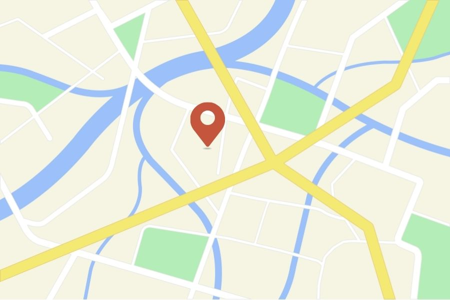

Monika Pernicová
HOMEOPATICKÉ PORADENSTVÍ
Moje první zkušenosti s homeopatií nastaly v roce 2004, kdy se mi narodil druhorozený syn a po výměně dětské lékařky z důvodu nespokojenosti a stále se zhoršujícího zdravotního stavu mého prvního syna (léčeného klasickou alopatickou medicínou) jsem uvítala nabídku této léčby v rámci běžných prohlídek. Nejdříve jsem s mírnou opatrností obě tyto léčby kombinovala, než jsem se přesvědčila, že se mohu na homeopatii plně spolehnout.
Syn, který byl od narození léčen pouze homeopatií, se těšil výbornému zdraví a tak je tomu dodnes, včetně mého třetího syna. Dokonce i u prvorozeného syna se nám postupně s paní doktorkou (tímto jí děkuji) podařilo zbavit potravinových alergií a ostatních zdravotních problémů.
Po mojí asi dvacetileté domácí léčebné praxi a nejrůznějších zkušenostech s homeopatií, samozřejmě včetně sebe i našich domácích mazlíčků, jsem zatoužila dozvědět se více a nastoupila na studium nejdříve akutní léčby a posléze Homeopatické fakulty v Brně. Moje fascinace homeopatií, její provázanost s přírodou a skvělé vedení našeho velkého učitele Aleše Sušického mi dává velkou motivaci pokračovat v cestě léčení druhých lidí, kde jsem našla smysl svého života.
Homeopatie je cesta ke zdraví a úplnému vyléčení pro všechny.
Nabízené služby
Homeopatické poradenství
Homeopatická léčba objevená koncem 19. století používá přírodní látky (bez vedlejších nežádoucích účinků) k napodobování nemoci a stimulaci léčby. Vychází z myšlenky „podobné léčí podobné“. Každá látka, jež může u zdravého člověka vyvolat nějaké symptomy, může stejné symptomy léčit u nemocného.
V homeopatii se nyní používá přes dva tisíce léků a léčí se s nimi cokoliv, od nachlazení a kašle až po artritidu a rakovinu. Homeopatie je státem uznané léčivo, osvědčila se jako spolehlivá metoda a často je dokonce efektivnější než běžná alopatická léčba.
Podle Světové zdravotnické organizace WHO používá homeopatii přes půl miliardy lidí. Jde o druhou nejrozšířenější praktikovanou formu medicíny na světě. WHO uvádí homeopatii jako „tradiční (holistickou) medicínu“, která by měla být po celém světě integrována s konvenční medicínou. V roce 1992 schválil Evropský parlament směrnice pro její používání v celé Evropě. Homeopatie je součástí národních systémů zdravotnictví v Anglii, Francii a Nizozemsku.
Tkáňové (Schüsslerovy, buněčné) soli
Tkáňové soli jsou základní minerální živiny, které se nacházejí v lidském organismu. Jejich nedostatek a nerovnováha může způsobovat nejrůznější zdravotní problémy. Způsobem homeopatické potence D3 a D12 bylo zjištěno, že můžeme doplnit chybějící minerální látky přímo do buněk těla tak, aby nevznikaly žádné přebytky.
Všechny tyto přípravky mohou bez obav užívat těhotné i kojící maminky nebo malé děti.
Veterinární homeopatie
Léčba domácích mazlíčků s nejrůznějšími zdravotními problémy.
Mykoterapeut
Bude v nabídce během příštího roku, momentálně procházím studiem.
Ceník
Vstupní konzultace
Doba trvání: 1,5 – 2 hodPočáteční homeopatická konzultace obsahuje rozhovor s klientem, kterého trápí opakující se chronické onemocnění. Během rozhovoru je důležité sdělení celkového zdravotního i psychického stavu ze strany klienta, na jejímž základě je nastavena konkrétní léčba. V případě chronických onemocnění se podává ve většině případů pouze jeden homeopatický lék, který je vybrán přímo na aktuální stav klienta. Výběr tohoto léku je složitější záležitostí, takže se může stát, že na to bude potřeba i více času po konzultaci. V každém případě je cena léku při konzultaci, popř. při následném dodání zahrnuta v ceně vstupní konzultace.
Kontrola
Doba trvání: 30 – 45 minKontrolní pohovor je nutný v rámci zjištění působení daného léku, vývoje situace a popř. změna nastavení léku. Tato konzultace probíhá zpravidla po 4 až 6 týdnech. Zde není zahrnuta cena léku.
Akutní ošetření
Doba trvání: cca 15 minPoradenství v případě akutních stavů, jako jsou například úrazy, virózy, zažívací potíže apod. Většinou postačí telefonická konzultace.
Paušální konzultace
V této službě můžete mít svého homeopatického poradce na telefonu kdykoliv bude potřeba řešit akutní stavy například v rodině s malými dětmi s často se opakujícími nemocemi (max. 5 členů rodiny). Provede vás prvním až posledním stadiem nemoci, včetně prevence.
Kontakt

Poradna Boskovice
Kosmonautů 15, 680 01 Boskovice
Telefon: +420 123 456 789
E-mail: monika@pernicova.cz